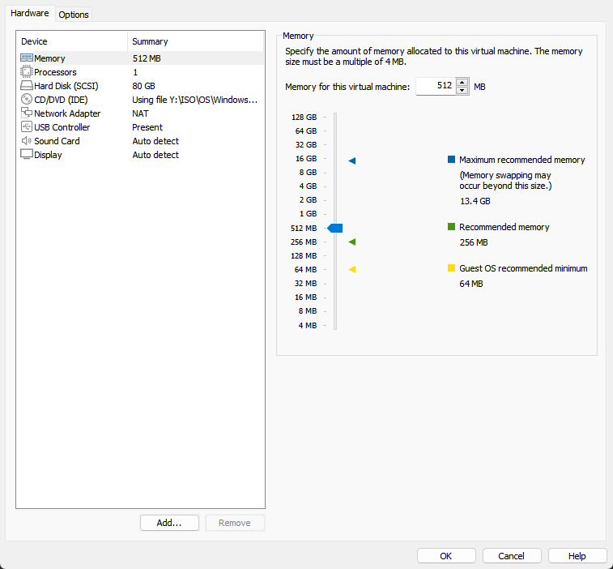

So, you've decided to install windows 2000, however, When setup is about to complete, your computer reboots and the setup restarts.
Older versions of windows (Especially as old as windows 2000) Get very cranky when installed on new hardware (Even more so when installed on a AMD Processor *Cough Cough* Windows 98 *Cough Cough*), The issues come from IRQ Conflicts. If you are not familiar with IRQ, It's a way for a piece of hardware to interupt the execution of a program. Today, Windows can usually handle IRQ, Through the Plug And Play Protocol, However, Windows 2000 cannot do this on VMWare, so we need to fix it.
First, Shut down the virtual machine completely. Right Click on your virtual machine, then click settings. A screen like this should popup.
We need to remove several devices. (Note i mean the VM Hardware, not your PC Hardware.) These include:
To do this, highlight the part, the click "Remove", Click OK when you're done.
Start your virtual machine off the CD again and delete any partitions that might already exist (note if you haven't installed yet, you can skip this.)
Run through setup again. It should no longer restart the install. After installing, and when you are at the desktop, you can shutdown and use the add hardware wizard to add the removed hardware.